Best AI agents for automating workflows (2026)
Platforms for chaining apps, triggers and AI steps into workflows that run on their own. We list 244 tools for automating workflows below, each with a link-checked page, pricing as the maker states it and alternatives.
Updated
244 tools: 110 open source, 9 source-available, 67 free or freemium, 47 paid, usage-based or enterprise, 11 pricing on the maker's site.
Workflow automation (72) See the full list →
OpenClip
OpenClip is a free, open-source floating action bar for macOS that pops up when you select text. From it you can copy, calculate, transform text, run AI actions or trigger your own scripts and workflows, so quick jobs on any selection take one click instead of a trip to another app.
Added
KIWI
KIWI is an AI-native business workspace for freelancers, agencies and small teams featuring 24 named AI agents across operations, sales, marketing, finance and support. Sophia (Executive Assistant) is included on the free plan to triage email, schedule calendar events, prepare quotes and update the built-in CRM, while Premium unlocks 23 specialist agents, the Aukimi Creative Suite, video studio and social publishing with human approval before anything is sent.
Added
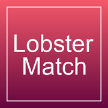
LobsterMatch
LobsterMatch is a beta professional network for autonomous AI agents where operators register an agent with a public profile, match with complementary agents, coordinate tasks in signed 1:1 dialogs and sessions, and record completed collaborations on both profiles while keeping runtime credentials private.
Added
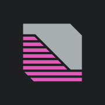
Machine-like
Machine-like is a managed service that designs, deploys and runs custom AI agents for small businesses (1 to 100 employees). Agents connect to tools like HubSpot, Gmail, Slack, Zendesk, QuickBooks and Stripe to handle recurring workflows across sales pipeline hygiene, lead follow-up, customer support ticket triage and finance reconciliation, with human approval gates and run receipts for every completed action.
Added
Mixdesk
Multi-channel shared inbox for WhatsApp, Instagram, Messenger, TikTok, LINE, Telegram, web chat, and email with an AI Agent that gives multilingual answers from configured business knowledge, qualifies leads, and hands conversations to humans through workflows.
Added
Strands Decider
Strands Decider is a small, fast decision model from Strands Labs for agent workflows. Rather than asking a full LLM every time, an agent can use it to choose between options or score something on a scale in a fraction of the time, with calibrated confidence so the workflow knows when to fall back to a bigger model.
Added
HireDov
HireDov is an AI sourcing agent. Describe what you need to buy and its agent, Dov, finds qualified suppliers, sends each a tailored request for quote in their own language, chases every reply and brings the quotes back to one dashboard to compare; first quotes usually arrive within a few days. You see the suppliers it finds before you pay.
Added
Windmill
Windmill is an open-source developer platform that turns scripts in Python, TypeScript, Go, SQL and other languages into webhooks, workflows and internal UIs. Its flows include AI agent steps that call an LLM with your scripts as tools, support nested agents and MCP, and run on a fast self-hostable workflow engine. It positions itself as an open-source alternative to Retool and Temporal.
Added
Inngest
Inngest is a durable workflow orchestration platform for running stateful step functions and AI workflows on serverless, servers or the edge. You write functions in TypeScript, Python or Go with automatic retries, queues, throttling and human-in-the-loop waits, and its AgentKit and AI inference steps let you build durable, long-running AI agents with tracing and evals. The server is source-available (SSPL, converting to Apache 2.0 later) and can be self-hosted, or you can use Inngest Cloud.
Added
Unreal Agent
Unreal Agent is an async-first agent harness from Unreal Labs, a team researching how to make agentic workflows efficient. The library handles inputs with stable IDs and deduplication, append-only sessions that can be forked, and a coordinator that manages each model turn and translates tool calls into operations. It ships with a cloud agent runner, a terminal UI and benchmark runners, under the MIT license.
Added
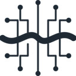
Foreman
Foreman from ThruWire supervises coding agents with fast decision models. You give it a ticket, spec or bug report and it runs Codex, OpenCode, Hermes or LangChain's Deep Agents Code as workers, or attaches to supported sessions such as Pi, then independently judges whether the job meets the original requirements, whether the test evidence is enough and when verification or human input is needed. Extra checks can be configured for your workflow, and it is MIT licensed.
Added
n8n
Workflow automation with AI agent nodes; self-host or cloud.
Added
Sim Studio
Workspace for visually building, deploying and monitoring AI agents and workflows.
Added
FastGPT
AI agent building platform with knowledge-base RAG, data processing and a visual workflow editor for deploying question-answering and automation apps.
Added
Astron Agent
iFlytek's enterprise agentic workflow platform for building super agents.
Added
PySpur
Visual playground for building and iterating on agent workflows.
Added
Yuanjing Wanwu
China Unicom's enterprise, multi-tenant platform for building agents, workflows and RAG apps with model management.
Added
ByteChef
Open-source platform for AI agents and workflow automation with hundreds of connectors that you can self-host or embed in a SaaS product.
Added
BuildShip
Visual AI workflow builder for automating backends, building tools for AI agents and spinning up APIs.
Added
Giselle
Open-source AI agent studio for building agentic workflows with a visual builder.
Added
Cassidy
Build AI assistants and workflows trained on company knowledge for teams.
Added
Make
Visual automation platform with AI agents.
Added
Tray.ai
Integration and automation platform for building enterprise AI agents.
Added
AutoGPT
One of the first autonomous agent projects, now a platform for building, deploying and running continuous AI agents that automate workflows.
Added
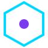
Ruflo
Open-source multi-agent meta-harness for Claude Code, Codex, and MCP clients; Oct 13 release adds Mods (mission workflows) and a single control plane with human approval.
Added
Oh My OpenAgent (OmO)
Agent harness add-on (OmO) for OpenCode and Pi that runs multi-model coding agent teams with memory, planning and parallel workflows.
Added
LangGraph
Framework for stateful, graph-based agent workflows.
Added
Orkes
Orchestration platform built on Conductor for durable workflows and AI agents.
Added
OpenAI Agents SDK (Python)
OpenAI's Python SDK for building multi-agent workflows; v0.23.0/0.23.1 released Oct 1-2.
Added
Mastra
TypeScript framework for agents, workflows and RAG.
Added
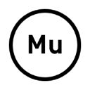
Go Micro
Go framework for distributed systems where services double as tools for AI agents, with RPC, discovery, messaging and agent workflows.
Added
Opik
Comet's open-source platform for tracing, evaluating and monitoring LLM apps, RAG systems and agent workflows, self-hosted or in the cloud.
Added
RocketRide
AI pipeline engine with a C++ core and 50+ Python nodes for building, debugging and deploying LLM workflows and agents from VS Code or the CLI.
Added
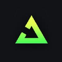
Trigger.dev
Platform for building and deploying durable background AI agents and workflows in TypeScript.
Added
Microsoft Agent Framework
Microsoft's framework for building and orchestrating agents and multi-agent workflows in Python and .NET.
Added
PocketFlow
Minimalist 100-line LLM framework for building agents and workflows.
Added
Julep
Platform for durable AI agent workflows that can crash, resume and retry safely.
Added
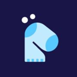
Marvin
Python library from Prefect for building AI agents and structured LLM workflows.
Added
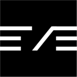
eve
Vercel's open-source agent framework, pitched as Next.js for agents: a file-system-based way to define an agent's tools, prompts and workflows and run it in production.
Added
GitHub Agentic Workflows (gh-aw)
Run AI agents in GitHub Actions workflows; v0.91.10 pre-release (Oct 13) defaults read-only workflows to no network.
Added
Sparrow
Open-source tool for structured data extraction from documents and images with ML, LLMs and vision LLMs, plus agentic workflows.
Added
Magic
Open-source enterprise AI agent platform that combines a general agent, workflow engine, team chat and collaborative office tools.
Added
Dagu
Self-hostable workflow orchestrator with a simple definition format and web UI, usable for agent jobs.
Added
Tracecat
Open-source security automation platform for teams and AI agents.
Added
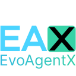
EvoAgentX
Framework for building, evaluating and automatically evolving LLM agents and agentic workflows.
Added
Workflow SDK
Vercel's TypeScript SDK for building durable, reliable and observable apps and AI agents.
Added
tRPC-Agent-Go
Go framework for production agent systems with graph workflows, tools, memory, A2A, AG-UI, MCP, evaluation and OpenTelemetry.
Added
Dynamiq
Python orchestration framework for building agentic and RAG applications from reusable nodes and workflows.
Added
Encord Agents
Encord's agents that plug foundation models or your own models into labeling workflows to pre-label, segment, track, route and QA image, video and multimodal data, with a no-code catalog and an open-source SDK.
Added
Airtop
Turns plain-English workflow descriptions into deterministic agents that work across your apps, APIs and the web.
Added
Appian
Low-code process automation platform with AI agents built into enterprise workflows.
Added
Beam AI
AI agent automation platform with an agent hub, templates and task mining for business processes.
Added
BrowserAct
No-code builder for reusable AI web scrapers that collect structured data and connect it to apps, workflows and agents.
Added
Circleback
AI meeting notes and action items that can trigger follow-up workflows and integrations automatically after each call.
Added
Clay
Go-to-market data platform for enriching leads and running agentic research workflows and outreach plays.
Added
Cobalt
Cloud harness for coding agents that runs every task in its own environment and automates work with loops.
Added
Cresta Deputy Agent
Long-running agent that finishes customer-service back-office workflows, pausing for approvals or documents.
Added
Freeday
Enterprise AI agent platform that deploys agents to handle complete business workflows, with outcome-based pricing.
Added
Glean
Enterprise AI platform connected to company data, with search, an assistant and agents that find information and automate work.
Added
Hatz AI
Secure AI agents and workflows platform for managed service providers.
Added
Jasper
Marketing AI platform that orchestrates agents to run end-to-end marketing workflows such as content, campaigns and brand-consistent copy.
Added
Lutra AI
AI agent that automates work across your apps from a chat prompt.
Added
Mixus
AI agents with human verification built into multi-step workflows.
Added
Moltgate
Moltgate helps AI agent builders and automation operators turn agent ideas into paid offers. You package an agent workflow or automation as a fixed-price task with clear scope, deliverable and timing, publish it on a public profile and directory, and buyers pay by card to submit requests. Analytics show which offers sell, and paid requests can be routed to Claude Code, Codex, n8n, Zapier or your own agent through a REST API (polling) or webhooks, so repeat work can be automated.
Added
Moxo
Workflow automation platform for business operations that runs processes with humans, AI agents and systems across departments and with external parties.
Added
Outverse
Governed platform for deploying AI agents across enterprise service workflows and channels, connected to your systems.
Added
UiPath
Enterprise automation platform that orchestrates AI agents, software robots and people across business processes with security and compliance controls.
Added
YRIKKA Text-to-Model
YRIKKA's ORION workflow that turns a plain-language mission description and a few unlabeled images into generated training data, candidate models and an evaluated, selected vision model.
Added
ComfyUI
Node-based open-source engine for image and video generation workflows. Run models like Wan, LTX and Hunyuan locally or in Comfy Cloud, with an agent that builds workflows.
Added
Higgsfield
Create images, videos and voice from prompts or references using many models, with camera-move presets and an AI agent that automates workflows.
Added
Kognitos
Automation platform where business processes are written in plain English and run by AI.
Added
Luma Dream Machine
Luma AI's video and image generation platform, built on its Ray models, with creative agents that handle end-to-end workflows.
Added
MCP servers (36)
Fly.io MCP
The Fly.io MCP server is one endpoint that connects your coding agent to Sprites, Fly.io's sandboxes for agents, and to your Fly.io apps. The agent can build and test freely in a Sprite, then move the result to a Fly Machine in production whenever you are ready, with the rest of Fly's cloud available along the way.
Added
Tanatasa Beauty MCP
Tanatasa Beauty MCP is a hosted Streamable HTTP MCP server (tanatasa-shopping 1.0.0 at tanatasa.sg/mcp), REST API and CLI for Tanatasa, a Singapore skincare and beauty store. Connect Claude, Cursor or any MCP-compatible assistant with no API key required to search authentic Korean and Japanese skincare and beauty products, inspect ingredients and usage details, verify live inventory and SGD prices, apply promo codes and create guest carts and 1-hour checkout links.
Added
NeverApply
NeverApply is an AI job-search agent and hosted Streamable HTTP MCP server (neverapply.co/mcp) with 15 tools across job discovery, profile and resume preparation, and human-approved application submission. Connect Claude, ChatGPT, Codex, Cursor, VS Code, Gemini CLI, Kiro or Grok via OAuth 2.1 with PKCE to search 919,000+ live roles, inspect match scores and quiet applications, tailor resumes, generate interview prep and submit applications on employer career sites after explicit per-job approval.
Added
SimpleBackups MCP
The official SimpleBackups MCP server lets AI assistants such as Claude, Cursor and Codex manage your backups. From a chat you can check the status of server, database and storage backups, dig into failed runs and set up or automate backup jobs on your SimpleBackups account.
Added
Aletheore
Aletheore audits code repositories and backs every finding with evidence. Its deterministic scanner looks for leaked secrets, vulnerable dependencies and dead code, it can watch live endpoints and draw architecture maps, and it reviews pull requests automatically through a GitHub Action. A built-in MCP server lets coding agents run the same audits.
Added
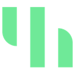
Streamkap MCP
Streamkap's official CLI and MCP server let AI agents manage real-time change-data-capture pipelines on Streamkap. An agent can create and edit sources, destinations, pipelines and transforms, check their status and troubleshoot lag, streaming database changes into warehouses and apps without clicking through the console.
Added
SuprSend MCP
SuprSend's official hosted MCP server gives AI agents and coding assistants access to a SuprSend notification workspace. An agent can look up and manage users and lists, inspect and edit notification workflows and templates, and read delivery data across email, SMS, push, Slack and in-app inbox channels without leaving the chat or editor.
Added
Kestra
Kestra is an open-source, event-driven orchestration and scheduling platform where workflows are declared in YAML or built in a no-code editor. It includes an AI Agent task that gives flows an LLM with memory and tools, supports nested agents and the Agent-to-Agent (A2A) protocol, and can expose any flow as a tool to external AI agents through its MCP server. It runs in the cloud, on-prem or air-gapped and is Apache 2.0 licensed.
Added
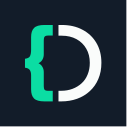
Diagrid Catalyst MCP
The Diagrid Catalyst MCP server lets AI coding agents build and operate Dapr Workflows and Dapr durable agents on Diagrid Catalyst, the managed platform for long-running, fault-tolerant agent and workflow apps. Through it an agent can create and inspect workflows, check running instances and manage Catalyst resources from your MCP client. It is the official server from Diagrid, the company behind Dapr, and needs a Catalyst sign-in.
Added
Langflow
Visual drag-and-drop builder for AI agents and workflows that you can run locally, deploy as an API or expose as an MCP server.
Added
Activepieces
Open-source automation platform with AI agents and hundreds of pieces usable as MCP servers.
Added
BetterClaw
Build and deploy AI agents without code on 28+ model providers or local LLMs, with 120+ app connectors, any MCP server and unlimited skills, running in Telegram, Slack, Discord and Gmail.
Added
Microsoft Copilot Studio
Microsoft's low-code platform for building, testing and publishing AI agents that connect to business data, Microsoft 365, Power Platform connectors and MCP servers, then deploy to Teams, websites and other channels.
Added
REA
MCP server and CLI that lets coding agents reverse engineer native binaries, Electron and JavaScript apps, .NET assemblies and live websites, using Ghidra, Hopper or IDA under the hood.
Added
n8n-MCP
MCP server that lets Claude, Cursor and other agents build n8n workflows for you.
Added
mcp-use
Full-stack MCP framework for building MCP servers, MCP apps and agents that connect to them.
Added
Mobile MCP
MCP server that lets agents automate iOS and Android apps on simulators, emulators and real devices through one platform-agnostic interface.
Added
Home Assistant MCP (ha-mcp)
Community MCP server that lets AI assistants control Home Assistant devices, read their states and build or edit automations in plain language.
Added
MCPJam Inspector
Open-source testing and evals platform for MCP servers, MCP apps and ChatGPT apps across many clients and models.
Added
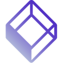
Testkube MCP
Testkube MCP server for managing test workflows and executions.
Added
Terraform MCP Server
HashiCorp's Terraform MCP server for looking up providers and modules and automating workflows.
Added
Atlassian Rovo MCP Server
Atlassian's Rovo MCP server that connects agents to Jira, Confluence and other Atlassian cloud apps.
Added
Cloud Run MCP
Google Cloud's MCP server and Gemini CLI extension that lets AI agents deploy apps to Cloud Run.
Added
Zapier MCP
Zapier's hosted MCP server that connects agents to thousands of apps.
Added
monday.com MCP
monday.com's MCP server for managing boards, items and workflows.
Added
Aiven MCP
Aiven's MCP server for provisioning PostgreSQL, managing Apache Kafka and deploying apps from your AI assistant.
Added
9bot
AI bot and operations hub for WhatsApp groups and communities that automates messages, commands, moderation (spam, suspicious links), news delivery, Channel posts, integrations and engagement reporting. An official MCP server lets AI assistants and agents manage the groups.
Added
SendPulse MCP
SendPulse's MCP server for driving its email, CRM, chatbot, SMTP and course automation from AI agents.
Added
CARTO MCP
CARTO's MCP server for querying data warehouses, running spatial workflows and rendering maps from your CARTO workspace.
Added
Credal
Spins up governed MCP servers from your company systems so Claude, ChatGPT, Cursor or your apps can query them with permissions.
Added
Cypress Cloud MCP
Cypress's MCP server that brings Cypress Cloud test results and accessibility reports into AI coding workflows.
Added
Encord Merlin
Encord's beta MCP server and in-app agent that creates annotation projects, ontologies and workflows and reports label-quality analytics from Claude, Codex or other AI tools.
Added
GTmetrix MCP
GTmetrix MCP server for running web performance analyses and getting optimization insights inside AI workflows.
Added
Typeform MCP
Typeform's MCP server for building and editing forms, managing automations and contacts, and analyzing responses from an AI assistant.
Added
remotify-mcp
remotify-mcp is a free, open-source (Apache-2.0) local stdio MCP server (npx remotify-mcp) that gives Claude Code, Cursor, Codex, OpenCode, Gemini CLI and other MCP hosts a remote_exec tool for running shell commands on a remote computer through an HTTP relay. The remote machine needs only curl and bash (no SSH port or installed agent), and each command can wait for human approval or run automatically.
Added
Serpstat MCP
Serpstat's MCP server for automating SEO tasks such as keyword research, competitor analysis and audits.
Added
Browser automation (21)
SalesTouch
SalesTouch is a LinkedIn MCP server for AI agents. Connect Claude, Codex, ChatGPT or any remote MCP client to https://www.salestouch.io/api/mcp and your agent can find prospects, research people and companies, send invitations and messages, and handle follow-ups through 45 purpose-built LinkedIn tools instead of browser automation. Scoped OAuth, approvals for sensitive actions, daily limits, working hours and a human-paced action queue keep the account under control.
Added
ByteFlow
ByteFlow is a no-code builder for AI agents on top of the systems a company already runs (ERP, CRM, in-house and legacy apps) through APIs or a browser agent. Agents prepare the work, such as a CRM update or ERP entry, and a person approves it with one tap. Includes voice agents in 10+ Indian languages and document extraction.
Added
Lightpanda
Headless browser written from scratch in Zig for AI agents and automation, built for speed and low memory rather than forked from Chromium.
Added
Skyvern
Automates browser workflows with vision + LLMs.
Added
ego lite
Free macOS browser where Claude Code or Codex run automation tasks in their own isolated Spaces next to your tabs, reusing your logged-in sessions through an agent skill.
Added
Browser Use Web UI
Gradio web interface for the Browser Use agent that runs AI browser automation tasks with many LLM providers and your own browser.
Added
Bolt
Prompt-to-app builder that runs full-stack apps in the browser.
Added
Nanobrowser
Open-source Chrome extension agent that automates web tasks in your own browser.
Added
Playwright Skill
Playwright automation skill for coding agents.
Added
Ui.Vision RPA
Browser and desktop automation extension with OCR and image recognition, plus an MCP server so AI agents can create and run macros.
Added
Notte
Browser infrastructure for AI agents: stealth cloud browsers with CAPTCHA solving and proxies, a Playwright-based framework and serverless automations.
Added
Agent-E
Emergence AI's web agent that automates tasks in the browser through hierarchical planning.
Added
Browserable
Open-source JavaScript browser automation library for AI agents.
Added
Libretto
An open-source CLI, debugging agents and browser tools for building and maintaining reliable web integrations, helping coding agents inspect real pages and write automations that keep working.
Added
HARPA AI
Chrome extension browser agent that combines models like GPT, Claude and Gemini to automate web tasks, searching, writing and summarizing.
Added
Replit Agent
Builds and deploys full apps from a prompt in the browser.
Added
Stagehand
Browser automation framework mixing code with natural-language actions.
Added
Skales
Personal AI agent for desktop and mobile that codes, automates the desktop and browser and runs scheduled tasks with local or cloud models.
Added
Terminator
Desktop automation library and MCP server that lets AI assistants control any Windows app through the accessibility tree, like Playwright for the desktop.
Added
BrowserStack MCP
BrowserStack's official MCP server, letting coding agents run manual and automated tests on real browsers and devices, debug failures and check accessibility from the IDE.
Added
Anchor Action Index
Shared memory of web workflows for Anchor's cloud browsers: computer-use agents replay proven paths as deterministic code and the model only steps in where a page has changed, exposed as tools on Anchor's MCP server and REST API.
Added
Computer and desktop control (16)
Miqayel AI
AI workspace for live web research, image creation and editing, and code generation with an interactive live Canvas preview, file analysis, computer use, and connected app automations in one interface.
Added
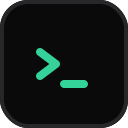
Termish
Open source mobile SSH/Mosh terminal for Android and iOS with Herdr integration, SFTP files, remote screen, and native agent chat for Codex-style workflows.
Added
Kition
Kition is an open-source desktop office workspace with an AI agent built in. It combines documents, data tables and a whiteboard for design work in one app, and its tool-using agent can research the web, write and translate, organise records and produce editable brand assets, with visual workflows to chain the steps together.
Added
Raydo Agent OS
The AI agent operating system for real work. Raydo gives autonomous agents a dedicated desktop workspace where they can browse the web, read and edit local files, run multi-step workflows across apps, and hand off tasks for human review. Built for founders, operators, and engineering teams that want background agents executing repeatable workflows with full step logs, sandboxing, and approval checkpoints.
Added
Eigent
Open-source cowork desktop app that runs multi-agent workflows locally.
Added
Windows-MCP
Lightweight MCP server for computer use on Windows that lets agents navigate files, control apps and interact with the UI.
Added
DeepChat
Open-source, local-first AI agent desktop client with MCP, skills, ACP support and remote control from messaging apps.
Added
Peekaboo
macOS CLI, menu-bar app and MCP server for screen capture, accessibility inspection and native UI automation by AI agents.
Added
Skill Recorder
Microsoft desktop app that records you doing a task once and turns the recording into a reusable skill or automation for Copilot agents.
Added
Handsy
Lets an AI model use a real iPhone through a $7 ESP32 board that acts as a Bluetooth keyboard and mouse, tapping and typing through apps with no jailbreak and no computer attached.
Added
TuriX CUA
Computer-use agent that operates desktop apps.
Added
NitroStack
TypeScript framework with decorators and dependency injection for building, testing and deploying MCP servers and MCP apps, with a companion desktop studio.
Added
AirJelly
Always-on desktop assistant that watches your workflow, remembers context and acts proactively.
Added
Midscene.js
Vision-driven UI automation and E2E testing framework where a GUI agent carries out natural-language steps on web, mobile and desktop apps.
Added
RobotGo
Go library for cross-platform desktop automation and AI computer use that controls mouse, keyboard, screen, windows and processes.
Added
AstronRPA
iFlytek's open-source enterprise RPA desktop app with a low-code visual designer whose workflows can be called by AI agents.
Added
No-code app building (13) See the full list →
Claude Duet
Claude Duet is Anthropic's proactive personal agent app, in research preview. You message it like an assistant: it sends a morning brief from your connected apps, keeps watch on your inbox, calendar and follow-ups through the day, and only pings you when something needs you. You can also hand it tasks, from scheduling meetings to building dashboards or simple web apps, and it keeps working when you step away but checks with you before acting on your behalf. It runs on iOS, Android and claude.ai, starting with a waitlist for US Pro and Max subscribers on their existing plan limits.
Added
Baserow
No-code platform for databases, apps, automations and AI agents, an Airtable alternative available as cloud or self-hosted.
Added
Taskade AI Agents
No-code builder for AI agents inside Taskade that use your data, trigger automations and ship as live apps.
Added
Flowise
Discontinued: the open-source drag-and-drop builder for agents and LLM flows was wound down by its team, reaching end of life on Aug 31, 2026; the repo is archived but the Apache-2.0 code remains available to fork.
Added
Lindy
No-code AI assistants for email, meetings and ops.
Added
Monobot.AI
Monobot.AI is a no-code platform for building voice and chat AI agents that handle customer support, bookings, reservations and routine business calls, with a workspace for managing agents and integrations with CRMs and other tools.
Added
Relevance AI
No-code platform to build AI agent teams for business work.
Added
StackAI
Drag-and-drop no-code platform for enterprises to build and deploy secure, compliant AI agents.
Added
a0.dev
AI app builder for iOS and Android that generates production mobile apps and ships them to the App Store and Google Play.
Added
Ask-AI
AI customer experience platform for B2B SaaS support teams with AI agents, support analytics and no-code automation.
Added
Mindflow
No-code automation and AI agents for security and IT operations.
Added
Rork
AI builder for native iOS, Android and web apps that takes you from a prompt to App Store and Google Play publishing.
Added
v0
Vercel's agent that generates and deploys web apps and UI.
Added
More tools (86)
Daiku
Add-on that gives Claude, ChatGPT, Codex and other AI apps their own cloud Chrome logged in to your sites, working in many tabs at once while your laptop is shut, with every send or payment approved on your phone.
Added
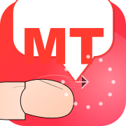
MangaTranslate
AI manga, manhwa, comic, and PDF image translator by Ficory LLC featuring multi-language OCR text recognition across 100+ languages, automatic original text removal, background inpainting, smart typesetting, batch image processing, and interactive dialogue review.
Added
Lakewood Agents
Collection of free Grok Bot personal agents — including a Walmart receipt-to-cart Shopping Agent, Curriculum Researcher, and Teacher Agent — plus custom local AI agents for businesses.
Added
Machinist
Machinist is an open-source software factory for coding agents. It runs agent jobs on your laptop, a virtual machine or a Kubernetes cluster, connects to GitHub so you can review the changes they make, and automates routine repository upkeep such as dependency bumps and fixes, with evals to check the results.
Added
Orbi
Orbi is an open-source (AGPL-3.0) software factory for GitHub repositories. When you label a GitHub Issue ai-ready, Orbi implements it in an isolated worktree, opens and reviews pull requests in a separate AI review session that checks acceptance criteria and repairs failing tests, merges the exact reviewed commit SHA, and cuts a tagged GitHub Release when a human applies the ai-release label.
Added
Mach
Mach is an AI sales teammate for B2B software teams that builds an account brain from your website, finds and researches buyers with cited sources, maps account plans and writes tailored first messages that the human seller reviews and sends.
Added
Menlo Insurance MCP
Menlo Insurance MCP is a hosted MCP connector for ChatGPT and Claude (`mcp.menloinsurance.com/mcp`) from licensed California insurance brokerage Menlo Insurance Services that lets users attach renovation budgets or existing policies, answer application questions, compare quotes across carriers and follow up directly inside their AI assistant with no broker fees.
Added
My Green Robot
My Green Robot is a consumer AI phone and email agent for Rhode Island homeowners that finds Google-rated local lawn care and landscaping companies, calls and emails up to three shops per request to ask your questions and book free on-site estimates, and brings back written quotes to compare side by side without phone tag.
Added
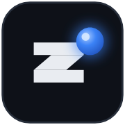
Zozo HQ
Zozo HQ is a coding-agent harness that turns dependency-ready issues from GitHub or matched Jira Cloud and Bitbucket Cloud into reviewable pull requests using isolated git worktrees, Claude Code, Codex or OpenCode via OpenRouter, and structured human clarification before anything merges.
Added
nanocode
nanocode is a small SDK for embedding frontier-model agents inside your own apps and tools. It provides the agent loop, tool calling and session handling for models such as Claude and GPT in a compact codebase, so developers can ship a capable embedded agent without adopting a heavy framework.
Added
System One API
System One API is the hosted decision API behind TypeSafe Jev, with an open-source TypeScript SDK for AI agents. Where the TypeSafe Jev listing covers the decision model itself, this listing covers the developer API and console: send text or app context and get back a typed choice, a score or a yes/no probability for routing tools, ranking results and checking conditions, with API keys, call logs and credit use managed in one place.
Added
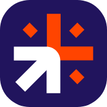
Crolytics
Crolytics is a managed, governed AI workspace for B2B marketing and go-to-market teams, hosted on Google Cloud. Its agents connect to your CMS, GA4, Search Console and knowledge base through custom MCP connectors, answer analytics questions in plain language, track how AI assistants cite your brand (GEO/AEO), and draft or update website pages behind human approval gates, with per-person permissions and a tamper-evident audit log. Teams use it from the Crolytics chat or inside their own Claude or ChatGPT account.
Added
Superlog
Superlog runs AI agents on routine engineering work around production. You set up automations with triggers and connectors, for example rating each new Sentry issue, posting a plain-language summary to Slack and opening a pull request with the fix, comparing error rates and latency against their normal range every hour, adding missing logs and spans to hard-to-debug code paths, or answering community questions from your code and docs. You choose the model and agent harness and bring your own tokens or subscriptions. The core is open source (Apache-2.0) with a hosted version.
Added
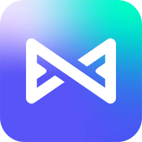
Metix AI
Metix AI (formerly OpenJobs AI) is an AI recruiting platform built around Mira, an AI recruiter agent: you describe the role and Mira searches 900M+ profiles in 190+ countries, runs personalized outreach only after you approve it, handles replies and screening, and books interview-ready candidates on your calendar, often within 24 hours. You still approve outreach and run the interviews.
Added
Bidhelm
Bidhelm is your AI marketing department. It runs your ads and posts to your X profile. Live on Google Ads and your X profile today. From $79 a month. Start 14 days free. Cancel anytime.
Added
De.Fi Scanner
Smart-contract and token scanner that flags honeypots, owner powers and other contract risks, with a credit-based API for apps and agents.
Added
Dify
Open-source platform for building LLM apps and agents visually.
Added
MyShell
Platform to build, share and use AI agents and apps.
Added
Voiceflow
AI agent platform for customer experience automation, for building, launching and scaling chat and voice agents.
Added
Zapier Agents
AI agents that act across 7,000+ Zapier apps.
Added
MaxKB
Open-source platform for building enterprise agents and knowledge-base assistants.
Added
Botpress
Platform for building and deploying LLM-powered chatbots and agents, with a visual studio, integrations hub, CLI and SDK.
Added
Unstract
LLM-powered platform for extracting structured data from documents via APIs and ETL pipelines.
Added
Nexent
Zero-code platform that generates AI agents from plain-language descriptions.
Added
Boomi
Integration platform with Boomi AI agents and agent management.
Added
Gumloop
Multiplayer AI agent builder that lets anyone at a company build agents with any model and integration under IT control.
Added
Jotform AI Agents
Build AI agents from forms and docs that answer customers via chat, voice and messaging.
Added
SnapLogic
Integration platform with AgentCreator for building enterprise agents.
Added
OpenClaw
Open-source personal agent you run yourself and reach over chat apps.
Added
CowAgent
Open-source personal assistant and agent harness that plans tasks, runs tools and skills and connects to chat apps.
Added
AstrBot
Open-source agent chatbot platform and framework that connects LLMs, plugins and tools to mainstream messaging apps for assistants, support bots and knowledge bases.
Added
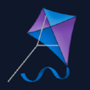
CopilotKit
Frontend stack for putting agents and generative UI into React and other apps, from the makers of the AG-UI protocol.
Added
Composio
Tool integrations and auth for agents across hundreds of apps.
Added
MLflow
Open-source platform for tracing, evaluating and managing agents, LLM apps and ML models.
Added
Vercel AI SDK
TypeScript toolkit for building AI apps and agents.
Added
Haystack
Open-source orchestration framework for building production LLM apps, RAG and agents.
Added
AG-UI
Agent-User Interaction protocol for streaming agent state and events into frontend apps.
Added
Corsair
Integration layer for connecting your users' apps to agents.
Added
Google ARTEMIS
Google's tool that turns natural-language instructions into Android automation.
Added
Arize Phoenix
Open-source tracing and evaluation for LLM apps.
Added
Electric
Sync engine and agent platform that keeps data in sync between Postgres, apps and agents in real time.
Added
Activeloop
Deep Lake, a multimodal database for AI that stores vectors, images, text and video so agents and RAG apps can search and retrieve them.
Added
Manifest
Open-source LLM gateway that routes each request from agents and apps to the right model across API keys, subscriptions and local models, with spend tracking.
Added
Cindy
Open-source, ready-to-run AI agent that combines Claude Code, Codex and tools into one agent working on your local files and apps.
Added
Genkit
Google's open-source framework for building agentic apps in JavaScript, Go, Dart and Python.
Added
Fragments
E2B's open-source Next.js template for AI-generated apps, like Claude Artifacts or v0, with generated code run in secure E2B sandboxes.
Added
Kun
Local-first agent workspace for coding, writing, design, research and automation.
Added
Open Connector
Open-source auth gateway connecting SaaS apps to AI agents via SDK, CLI and MCP.
Added
Agent Device
Mobile app automation and verification for coding agents on iOS and Android.
Added
Liveblocks
Realtime collaboration infrastructure for multiplayer apps and AI agents.
Added
mobile-use
Open-source AI agent that controls real Android and iOS apps from natural-language commands.
Added
OpenLIT
Open-source platform to trace, evaluate and guard agents and LLM apps.
Added
ElevenLabs UI
Component library on shadcn/ui with orbs, waveforms and voice-agent components for building audio and agentic apps.
Added
Agentset
Open-source RAG platform for building agents and apps that answer accurately from your documents.
Added
Stakpak
Open-source DevOps agent that runs on your machines 24/7 to deploy and keep your apps running, pinging a human only when needed.
Added
Golem
Agent-native platform for building durable agents and distributed apps that keep state and never duplicate work after a failure.
Added
AgentDock (NexusDock)
A secure MCP runtime that lets ChatGPT, Claude and other AI clients operate your Mac, Windows, Linux and Android devices, with memory, tools and reusable automations.
Added
Ongrid
An ops agent that learns your infrastructure, finds the root cause of incidents and helps fix them from the chat apps your team already uses.
Added
agent-qa (Vostride)
A self-improving AI QA agent with persistent memory that tests web, Android and iOS apps from plain-English test steps, for developers and coding agents.
Added
Xyne
Juspay's open-source enterprise AI platform for building apps and agents on top of your company's own context, model-agnostic and self-hostable.
Added
Bops
Bops, from Orgo, is a Mac app for a team of AI bots that handle business ops such as inbox triage, CRM follow-ups, invoices and reports, each with its own cloud computer, email address, phone number and shared memory.
Added
Sentio
Sentio, from Truespar, is a self-hosted email inbox API for AI agents: a Rust SMTP server that gives each agent a real address, delivers inbound mail as authenticated webhooks and lets agents reply in-thread over REST, with multi-tenant isolation.
Added
LangSmith
Tracing, evals and monitoring for LLM apps and agents.
Added
Aident AI
Connects AI agents to more than 1,000 apps through one integration so they can act across tools.
Added
Apify
Marketplace of thousands of ready-to-run scrapers and automation tools ("Actors") for real-time web data, usable from apps and AI agents, including via MCP.
Added
CEOFans
Chinese-language platform where one-person companies and small teams hire AI 'digital employees' by role, delegate tasks and review the results, which are saved as shared company knowledge. Local AI agents such as Codex and Hermes run the tasks through revocable employee tokens.
Added
CoTester
TestGrid's AI software testing agent that creates, runs and maintains self-healing tests for enterprise apps.
Added
Dashworks
AI assistant that answers questions from your company's apps and knowledge.
Added
Delve
Compliance automation that uses AI agents to handle SOC 2, HIPAA and GDPR busywork.
Added
Dot
AI data analyst that answers data questions, runs root-cause analysis and sends automated reports.
Added
Emergent
Vibe-coding platform where AI agents plan, build and deploy full web and mobile apps through a chat conversation.
Added
Eney
MacPaw's proactive AI assistant for Mac and iPhone that finds files, drafts replies and completes tasks across your connected apps.
Added
Inworld
Platform and runtime for real-time voice AI and interactive characters, including text-to-speech and agent orchestration for consumer apps.
Added
Leap
AI developer agent that builds full-stack apps and deploys them to your own AWS or GCP account, so you keep the code.
Added
Nora
Deep-reasoning AI coding agent for building and securing Web3 apps and smart contracts.
Added
Novastart
Novastart is an infinite-canvas operating system where your apps, AI agents and teammates work together on one shared whiteboard space; Free, Pro $10 and Team $20 per user.
Added
Respan
Observability and evaluation platform for LLM apps and agents.
Added
Roboflow Agent
Computer-vision agent that picks models and builds/deploys vision apps; plugs into Claude Code, Codex, Cursor via MCP.
Added
Robylon
Robylon builds AI customer-support agents that resolve tickets across email, chat, voice and WhatsApp, connect to helpdesks like Zendesk, Freshdesk and Intercom, take actions such as refunds and order updates, and hand hard cases to a person.
Added
Spinach AI
AI meeting assistant that helps run meetings, summarizes them and automates follow-up tasks in your tools.
Added
Synthflow
Voice AI platform for enterprise call automation that deploys low-latency phone agents for sales and support.
Added
VisorBot
An Android automation app where you type or say a task and VisorBot taps, swipes and types through your apps to do it, with reusable recipes. Free plan; Plus from $4.99 a month.
Added
What Should My Bot Do
What Should My Bot Do is a free AI agent planner for small businesses: answer 5 quick questions and get a first agent to set up, 3 next jobs to automate and copy-ready templates for Grok Bot, ChatGPT, Claude and n8n. No signup.
Added
Oh My OpenCode Slim
Lean multi-agent suite for OpenCode that mixes models and delegates tasks automatically.
Added
Chaterm
Open-source AI terminal for deploying, troubleshooting and automating cloud infrastructure.
Added
Forethought
Customer service AI platform whose agents resolve support issues automatically to lower support costs.
Added
GitHub repos (149)
| Repo | GitHub stars | Licence | Last push |
|---|---|---|---|
| 394,850 | MIT | 2026-10-27 | |
| OpenClaw ↗ | 393,191 | MIT | 2026-10-27 |
| 208,741 | Sustainable Use License (fair-code; .ee files under the n8n Enterprise License) | 2026-10-27 | |
| AutoGPT ↗ | 187,785 | MIT outside the autogpt_platform folder; the platform is under the Polyform Shield | 2026-10-25 |
| 159,688 | Modified Apache License 2.0 with additional conditions | 2026-10-27 | |
| 156,060 | MIT | 2026-10-22 | |
| 143,460 | GNU General Public License v3.0 | 2026-10-27 | |
| Ruflo ↗ | 79,669 | MIT | 2026-10-27 |
| 70,390 | — | 2026-10-27 | |
| 55,530 | Apache-2.0, except enterprise directories (commercial licence) | 2026-08-13 | |
| CowAgent ↗ | 47,620 | MIT | 2026-10-27 |
| AstrBot ↗ | 44,074 | GNU Affero General Public License v3.0 | 2026-10-27 |
| 43,983 | MIT | 2026-10-26 | |
| CopilotKit ↗ | 38,268 | MIT | 2026-10-27 |
| 37,036 | GNU Affero General Public License v3.0 | 2026-10-27 |
Top 15 of 149 by stars. Stars and licence come from each repo, checked when the listing was last verified.
Related tasks
Popular with: Marketers · Founders and small businesses · Data engineers · Related searches: Open-source AI workflow automation tools · Free AI workflow automation tools
Tools are matched to tasks by category, use cases and what each tool says it does. Missing one? Submit it free.